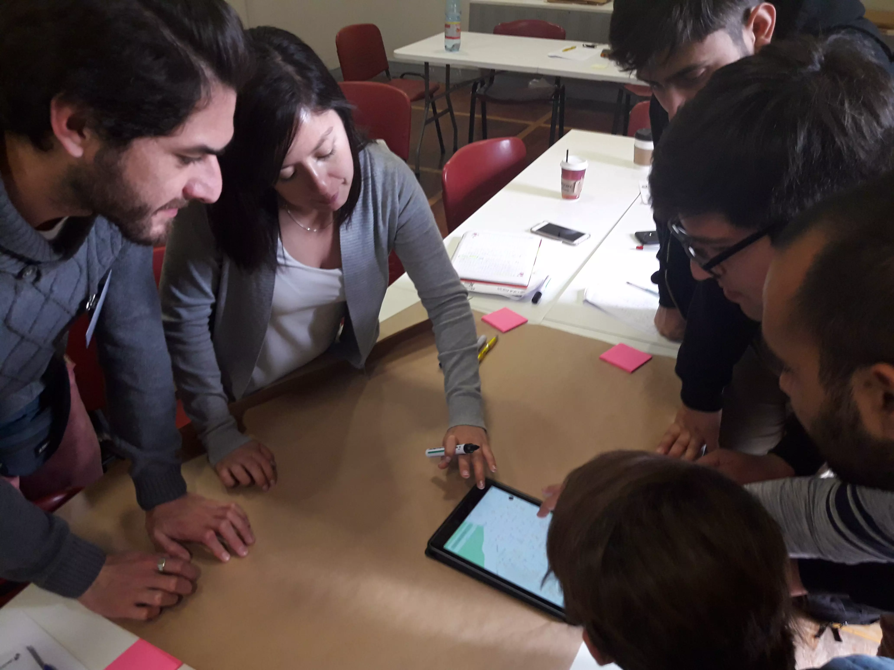

Fundación Veintiuno es una Organización No Gubernamental sin fines de lucro, tiene como objetivo principal el apoyo social a todas las comunidades en las cuales pueda intervenir, haciendo especial hincapié en todas aquellas actividades que tengan que ver con la educación, la comunicación y la información, centrando sus esfuerzos en grupos, organizaciones y personas socialmente vulnerables.
